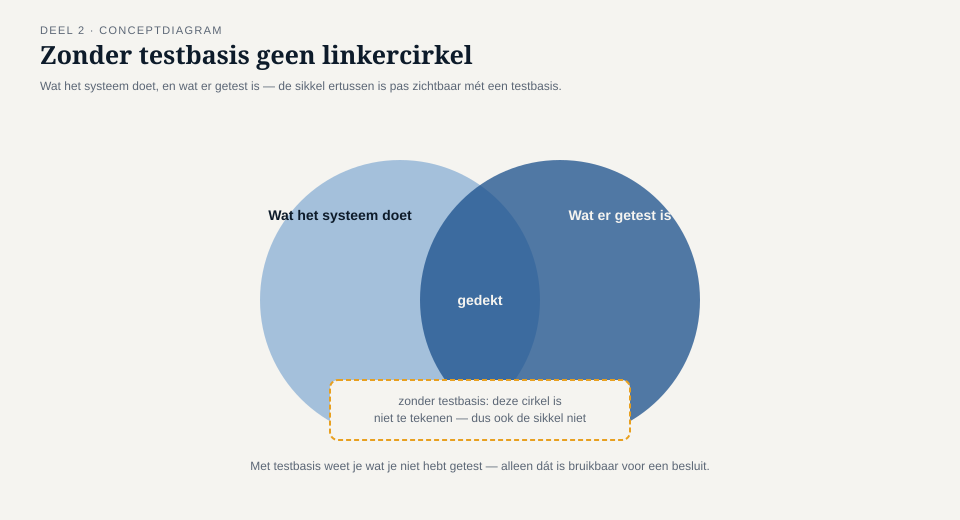
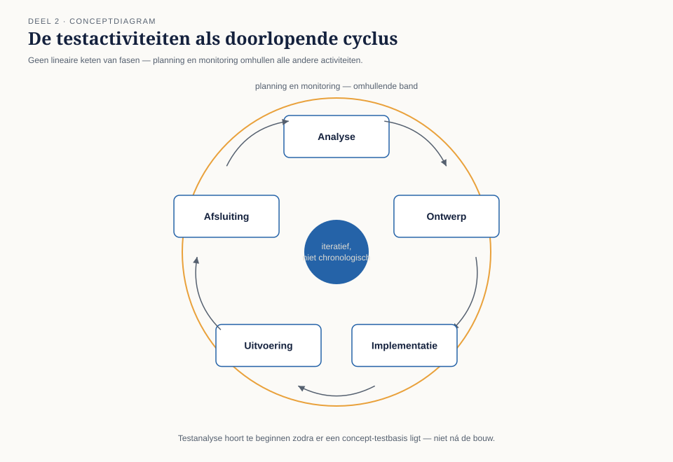

Deel 2 — Het testproces
Slidedeck · Ductus-cursus Testen en Kwaliteitsborging · niveau 1 · deel 2 van 30 · 27 slides
Slidetypen: titleSlide, sectionSlide, bulletsSlide, statementSlide, quoteSlide, tableSlide, figureSlide, opdrachtSlide.
Slide 1 — titleSlide
Het testproces Deel 2 · Niveau 1 Fundament Cursus Testen en Kwaliteitsborging
Slide 2 — quoteSlide
"Welke eisen zijn met deze 312 testgevallen afgedekt?"
— Iris Verweij, twee weken na haar aantreden
Marijke de Groot zocht een uur. Het antwoord bestond niet.
Slide 3 — statementSlide
Zonder testbasis weet je wat je hebt getest.
Met testbasis weet je wat je niet hebt getest.
Alleen het tweede is bruikbaar voor een besluit.
Slide 4 — figureSlide

Slide 5 — sectionSlide
1. De testactiviteiten
Slide 6 — bulletsSlide
Zeven activiteiten
- Testplanning
- Testmonitoring en -beheersing
- Testanalyse — wat gaan we testen?
- Testontwerp — hoe gaan we het testen?
- Testimplementatie
- Testuitvoering
- Testafsluiting
Dit zijn geen fasen.
Slide 7 — figureSlide

(live opbouwen op het bord — niet direct tonen)
Slide 8 — statementSlide
Testanalyse begint zodra er een concept-testbasis ligt.
Niet wanneer de bouw klaar is.
WGP 2.0 wachtte tot week 71 van 76.
Slide 9 — opdrachtSlide
Opdracht 2.1 — Activiteit of fase?
Vier uitspraken. Correcte toepassing, of fasegerichte denkfout?
15 minuten, individueel.
Slide 10 — sectionSlide
2. Werkproducten
Slide 11 — tableSlide
Wie leest wat?
| Werkproduct | Lezer | Waar het misgaat |
|---|---|---|
| Testaanpak | opdrachtgever, team | geschreven voor het archief |
| Voortgangsrapport | opdrachtgever | kleuren i.p.v. informatie |
| Testgevallen | uitvoerder, beheer | geen verwijzing naar testbasis |
| Testomgevingseisen | beheer | ongeschreven, dus onbesproken |
Slide 12 — opdrachtSlide
Opdracht 2.2 — Wie leest dit?
Vier werkproducten: wie is de lezer, en wat heeft die nodig?
10 minuten, tweetallen.
Slide 13 — sectionSlide
3. De testbasis
Slide 14 — bulletsSlide
Drie vragen om een testbasis te beoordelen
- Kun je hier een testgeval uit afleiden?
- Kun je vaststellen wanneer het fout gaat?
- Spreekt dit ergens anders in de testbasis tegen?
Vraag 3 had de hele WGP 2.0-storing voorkomen.
Slide 15 — statementSlide
Een testbasis is bijna nooit compleet.
Dat is geen uitzondering. Dat is de normale toestand.
Slide 16 — sectionSlide
4. Traceerbaarheid
Slide 17 — bulletsSlide
Twee richtingen
- Voorwaarts — welke tests dekken deze eis? → dekking
- Achterwaarts — waarom bestaat deze test? → relevantie
De waarde zit in de lege rijen.
Slide 18 — figureSlide

Slide 19 — opdrachtSlide
Opdracht 2.3 — Bouw een traceerbaarheidsmatrix
Vijf eisen, acht testgevallen uit het echte WGP 2.0-dossier. Geen verwijzingen — die maak jij.
Welke eisen blijven leeg? Wat zegt dat?
30 minuten, groepjes van drie.
Slide 20 — statementSlide
Eén kolom toegevoegd.
Zeventien overbodige testgevallen gevonden. Vier onafgedekte rekenregels blootgelegd.
Dit sloot bevinding T1.
Slide 21 — sectionSlide
5. Rollen en context
Slide 22 — tableSlide
Onafhankelijkheid — sterk en zwak
| Wie test | Sterk | Zwak |
|---|---|---|
| De maker zelf | snel, direct herstel | eigen blinde vlekken |
| Collega in team | andere blik | gedeelde aannames |
| Aparte testfunctie | systematiek | trager |
| Extern / toezicht | onafhankelijk oordeel | duur, weinig domeinkennis |
Geen juiste keuze — een passende keuze bij het risico.
Slide 23 — bulletsSlide
Contextfactoren
- Wat er misgaat als het misgaat
- Ontwikkelaanpak
- Regelgeving
- Volwassenheid van de organisatie
- Beschikbare tijd en middelen
Slide 24 — bulletsSlide
TMAP-lens
- Daar: geen apart testplan-document, maar bouwstenen die een team naar behoefte inzet
- Traceerbaarheid loopt via de koppeling story → acceptatiecriteria → geautomatiseerde test
De vraag blijft hetzelfde: welke eis is nergens door een test geraakt?
Slide 25 — bulletsSlide
Examenaansluiting — CTFL 1.4–1.5
- Testactiviteiten en -werkproducten
- Traceerbaarheid tussen testbasis en testwerk
- Testmanagement vs. testen, whole-team-benadering
Let op: testconditie ≠ testgeval, analyse ≠ ontwerp.
Slide 26 — bulletsSlide
Huiswerk
- Opdracht 2.4 — testconditie of testgeval?
- Opdracht 2.5 — onafhankelijkheid kiezen
- Opdracht 2.6 — contextfactoren eigen organisatie (startpunt deel 3)
- Oefentoets, tien vragen
Slide 27 — statementSlide
Volgende keer: testen in de levenscyclus
en de vraag die T3 sluit — wat gebeurt er als de testbasis ouder is dan het systeem?